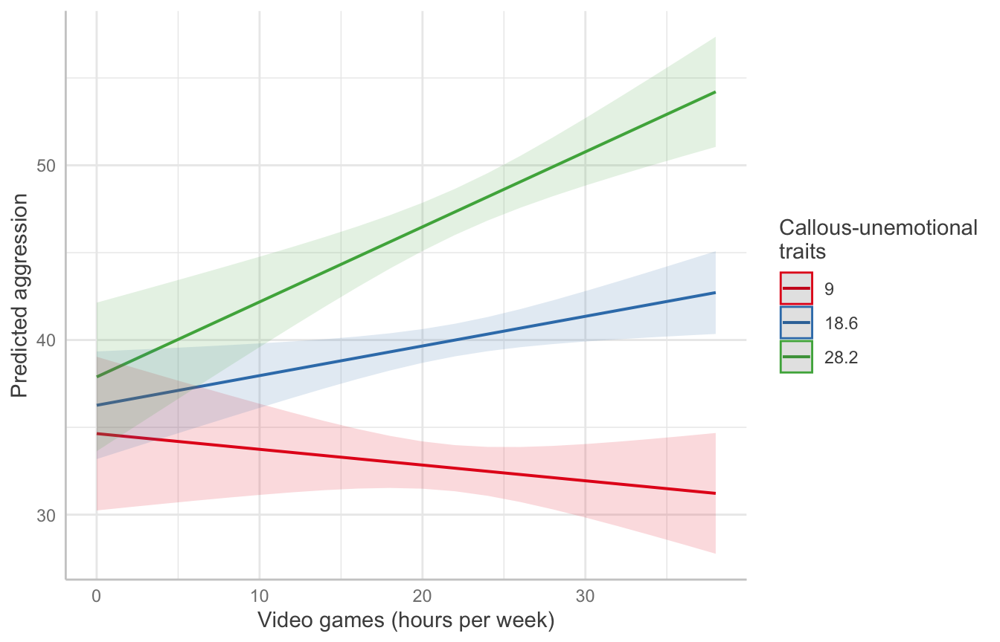
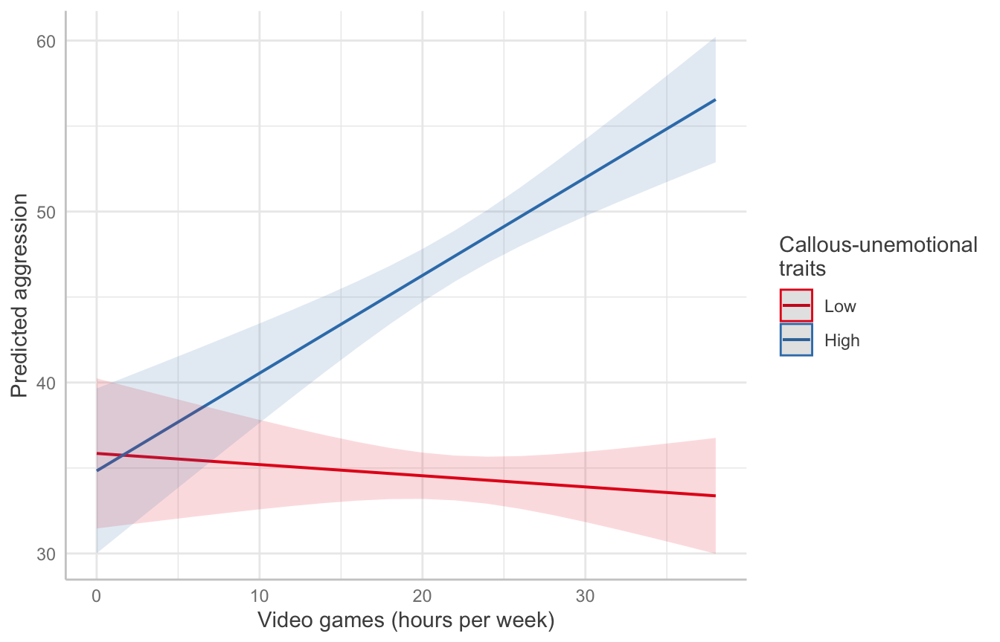
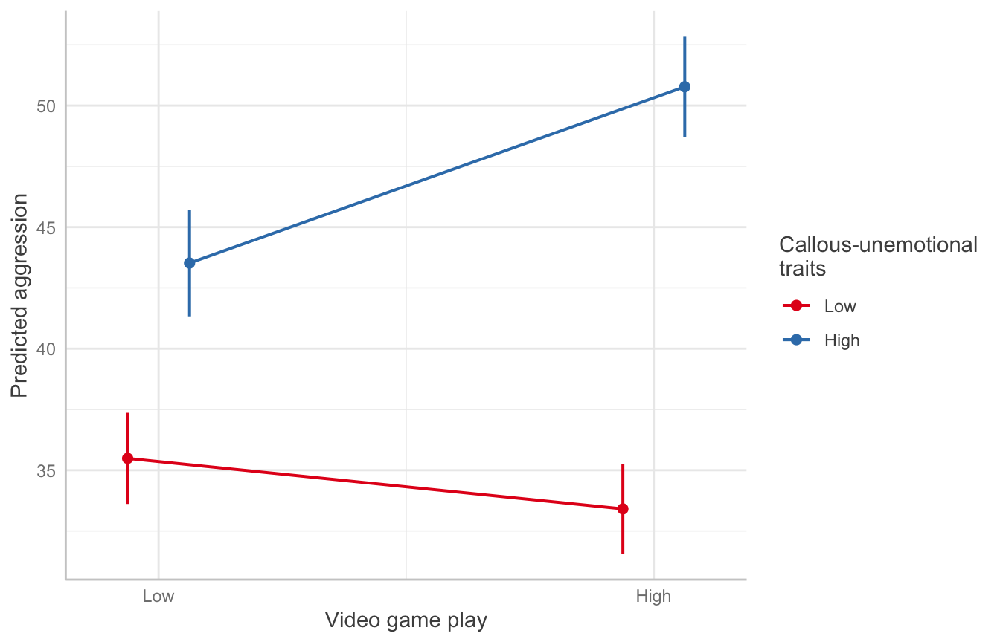

library(tidyverse)
library(haven)
library(psych)
library(ggeffects)
library(modelsummary)3 Moderation and Interaction Effects
A moderator is a variable that changes the strength or direction of the relationship between a predictor and an outcome. In regression, we test moderation by adding an interaction term: the product of the predictor and the moderator. If the interaction is significant, the effect of the predictor depends on the level of the moderator.
In this chapter, we build up an interaction model one step at a time. We start with continuous variables and then move to categorical ones. Along the way, we center predictors and use ggeffects to plot the predicted values that make interactions interpretable.
3.1 The data
Note: These data are simulated to match a study of video game play and aggressive behavior (McNulty, 2015).
The data include 442 participants. The outcome is a measure of aggression. The predictor is vidgames, hours of video games played per week. The proposed moderator is CaUnTs, a score for callous-unemotional traits. We rename CaUnTs to something easier to type and save the result as a clean copy of the data.
videogames <- read_dta("data/VideoGames.dta")
videogames_clean <- videogames |>
rename(callous = CaUnTs)
describe(videogames_clean, fast = TRUE)3.2 A model without an interaction
We start with an ordinary multiple regression. Here, each predictor’s effect is assumed to be the same at every level of the other predictor.
model1 <- lm(aggression ~ vidgames + callous, data = videogames_clean)
summary(model1)
Call:
lm(formula = aggression ~ vidgames + callous, data = videogames_clean)
Residuals:
Min 1Q Median 3Q Max
-27.952 -6.696 -0.168 7.022 32.499
Coefficients:
Estimate Std. Error t value Pr(>|t|)
(Intercept) 21.76433 1.80731 12.042 < 2e-16 ***
vidgames 0.18769 0.06940 2.705 0.00711 **
callous 0.76312 0.05024 15.191 < 2e-16 ***
---
Signif. codes: 0 '***' 0.001 '**' 0.01 '*' 0.05 '.' 0.1 ' ' 1
Residual standard error: 10.13 on 439 degrees of freedom
Multiple R-squared: 0.3559, Adjusted R-squared: 0.353
F-statistic: 121.3 on 2 and 439 DF, p-value: < 2.2e-16Both predictors are positively related to aggression. However, this model cannot tell us whether the effect of video games is stronger for some participants than for others.
3.3 Continuous predictor, continuous moderator
To test whether callous moderates the effect of vidgames, we add their product to the model. In R, vidgames * callous expands to vidgames + callous + vidgames:callous.
model2 <- lm(aggression ~ vidgames * callous, data = videogames_clean)
summary(model2)
Call:
lm(formula = aggression ~ vidgames * callous, data = videogames_clean)
Residuals:
Min 1Q Median 3Q Max
-29.7144 -6.9087 -0.1923 6.9036 29.2290
Coefficients:
Estimate Std. Error t value Pr(>|t|)
(Intercept) 33.120233 3.427254 9.664 < 2e-16 ***
vidgames -0.333597 0.150826 -2.212 0.027495 *
callous 0.168949 0.161049 1.049 0.294731
vidgames:callous 0.027062 0.006981 3.877 0.000122 ***
---
Signif. codes: 0 '***' 0.001 '**' 0.01 '*' 0.05 '.' 0.1 ' ' 1
Residual standard error: 9.976 on 438 degrees of freedom
Multiple R-squared: 0.3773, Adjusted R-squared: 0.373
F-statistic: 88.46 on 3 and 438 DF, p-value: < 2.2e-16The interaction term is positive and significant. This suggests that the relationship between video game play and aggression grows stronger as callous-unemotional traits increase.
Notice that the coefficient for vidgames changed sign, from positive in Model 1 to negative here. Once an interaction is in the model, the coefficient for vidgames is no longer an “overall” effect. Instead, it is the effect of video games when callous equals zero. Very few participants score near zero on that scale, so this coefficient is not very meaningful on its own.
3.3.1 Centering
Centering fixes this interpretation problem. When we subtract the mean from each continuous predictor, zero becomes the sample average. Each lower-order coefficient then describes the effect of one predictor for a participant who is average on the other.
videogames_clean <- videogames_clean |>
mutate(
vidgames_c = vidgames - mean(vidgames),
callous_c = callous - mean(callous)
)
model3 <- lm(aggression ~ vidgames_c * callous_c, data = videogames_clean)
summary(model3)
Call:
lm(formula = aggression ~ vidgames_c * callous_c, data = videogames_clean)
Residuals:
Min 1Q Median 3Q Max
-29.7144 -6.9087 -0.1923 6.9036 29.2290
Coefficients:
Estimate Std. Error t value Pr(>|t|)
(Intercept) 39.967108 0.475057 84.131 < 2e-16 ***
vidgames_c 0.169625 0.068473 2.477 0.013616 *
callous_c 0.760093 0.049458 15.368 < 2e-16 ***
vidgames_c:callous_c 0.027062 0.006981 3.877 0.000122 ***
---
Signif. codes: 0 '***' 0.001 '**' 0.01 '*' 0.05 '.' 0.1 ' ' 1
Residual standard error: 9.976 on 438 degrees of freedom
Multiple R-squared: 0.3773, Adjusted R-squared: 0.373
F-statistic: 88.46 on 3 and 438 DF, p-value: < 2.2e-16Compare Model 3 to Model 2. The interaction coefficient, its standard error, and the model R² are identical. Centering does not change the fit of the model. It only changes what the lower-order coefficients mean. In Model 3, the vidgames_c coefficient is the effect of one additional hour of video games for a participant with an average callousness score. The intercept is the predicted aggression score for a participant who is average on both predictors.
3.3.2 Plotting the interaction
Coefficients alone make interactions hard to see. A plot of predicted values is usually the clearest way to communicate one. ggpredict() computes predicted aggression across the range of vidgames at three values of callous: one standard deviation below the mean, the mean, and one standard deviation above it.
pred_cont <- ggpredict(model2, terms = c("vidgames", "callous [meansd]"))
plot(pred_cont) +
labs(
title = NULL,
x = "Video games (hours per week)",
y = "Predicted aggression",
color = "Callous-unemotional\ntraits"
)
The lines fan out. Among participants low in callous-unemotional traits, video game play is almost unrelated to aggression. Among those high in these traits, the predicted aggression rises with each additional hour of play.
3.4 Continuous predictor, categorical moderator
Moderators are often categorical (for example, treatment and control groups). To demonstrate, we split callous into high (20 or above) and low groups.
Note: Splitting a continuous variable into groups throws away information and reduces statistical power. We do it here only to show how a categorical moderator works. In your own work, keep a continuous moderator continuous.
We use case_when() to create the groups and factor() to give them labels. The first level listed becomes the reference group.
videogames_clean <- videogames_clean |>
mutate(
callous_group = case_when(
callous >= 20 ~ "High",
callous < 20 ~ "Low"
),
callous_group = factor(callous_group, levels = c("Low", "High"))
)
table(videogames_clean$callous_group)
Low High
250 192 model4 <- lm(aggression ~ vidgames * callous_group, data = videogames_clean)
summary(model4)
Call:
lm(formula = aggression ~ vidgames * callous_group, data = videogames_clean)
Residuals:
Min 1Q Median 3Q Max
-30.9825 -6.3774 -0.0474 6.8175 30.8649
Coefficients:
Estimate Std. Error t value Pr(>|t|)
(Intercept) 35.85328 2.23308 16.056 < 2e-16 ***
vidgames -0.06529 0.09792 -0.667 0.505
callous_groupHigh -1.02189 3.31738 -0.308 0.758
vidgames:callous_groupHigh 0.63694 0.14453 4.407 1.32e-05 ***
---
Signif. codes: 0 '***' 0.001 '**' 0.01 '*' 0.05 '.' 0.1 ' ' 1
Residual standard error: 10.53 on 438 degrees of freedom
Multiple R-squared: 0.3064, Adjusted R-squared: 0.3016
F-statistic: 64.49 on 3 and 438 DF, p-value: < 2.2e-16With a categorical moderator, the coefficients are easier to read directly:
vidgamesis the slope for video games in the reference group (low callous).callous_groupHighis the difference between groups whenvidgamesequals zero.vidgames:callous_groupHighis how much steeper the video game slope is for the high callous group.
pred_cat <- ggpredict(model4, terms = c("vidgames", "callous_group"))
plot(pred_cat) +
labs(
title = NULL,
x = "Video games (hours per week)",
y = "Predicted aggression",
color = "Callous-unemotional\ntraits"
)
3.5 Categorical predictor, categorical moderator
When both variables are categorical, the interaction model is the same as a two-way ANOVA with an interaction (Chapter 2). To demonstrate, we also split vidgames into high (22 or more hours per week) and low groups.
videogames_clean <- videogames_clean |>
mutate(
vidgames_group = case_when(
vidgames >= 22 ~ "High",
vidgames < 22 ~ "Low"
),
vidgames_group = factor(vidgames_group, levels = c("Low", "High"))
)
model5 <- lm(aggression ~ vidgames_group * callous_group, data = videogames_clean)
summary(model5)
Call:
lm(formula = aggression ~ vidgames_group * callous_group, data = videogames_clean)
Residuals:
Min 1Q Median 3Q Max
-27.7745 -7.2507 -0.4094 6.5122 31.2255
Coefficients:
Estimate Std. Error t value Pr(>|t|)
(Intercept) 35.488 0.954 37.200 < 2e-16 ***
vidgames_groupHigh -2.078 1.338 -1.553 0.121
callous_groupHigh 8.034 1.468 5.475 7.4e-08 ***
vidgames_groupHigh:callous_groupHigh 9.331 2.033 4.590 5.8e-06 ***
---
Signif. codes: 0 '***' 0.001 '**' 0.01 '*' 0.05 '.' 0.1 ' ' 1
Residual standard error: 10.58 on 438 degrees of freedom
Multiple R-squared: 0.2997, Adjusted R-squared: 0.2949
F-statistic: 62.47 on 3 and 438 DF, p-value: < 2.2e-16Here, the intercept is the mean aggression score for the low/low group, and each coefficient adds a piece to that baseline. The interaction term is the extra difference found only in the high video games, high callous group.
pred_both <- ggpredict(model5, terms = c("vidgames_group", "callous_group"))
plot(pred_both, connect_lines = TRUE) +
labs(
title = NULL,
x = "Video game play",
y = "Predicted aggression",
color = "Callous-unemotional\ntraits"
)
Lines that are not parallel indicate an interaction. Heavy video game play is associated with higher predicted aggression only in the high callous group.
3.6 Summarizing the models
modelsummary(
list(
"Additive" = model1,
"Continuous" = model2,
"Centered" = model3,
"Categorical moderator" = model4,
"Both categorical" = model5
),
stars = TRUE,
gof_map = c("nobs", "r.squared", "adj.r.squared")
)| Additive | Continuous | Centered | Categorical moderator | Both categorical | |
|---|---|---|---|---|---|
| + p < 0.1, * p < 0.05, ** p < 0.01, *** p < 0.001 | |||||
| (Intercept) | 21.764*** | 33.120*** | 39.967*** | 35.853*** | 35.488*** |
| (1.807) | (3.427) | (0.475) | (2.233) | (0.954) | |
| vidgames | 0.188** | -0.334* | -0.065 | ||
| (0.069) | (0.151) | (0.098) | |||
| callous | 0.763*** | 0.169 | |||
| (0.050) | (0.161) | ||||
| vidgames × callous | 0.027*** | ||||
| (0.007) | |||||
| vidgames_c | 0.170* | ||||
| (0.068) | |||||
| callous_c | 0.760*** | ||||
| (0.049) | |||||
| vidgames_c × callous_c | 0.027*** | ||||
| (0.007) | |||||
| callous_groupHigh | -1.022 | 8.034*** | |||
| (3.317) | (1.468) | ||||
| vidgames × callous_groupHigh | 0.637*** | ||||
| (0.145) | |||||
| vidgames_groupHigh | -2.078 | ||||
| (1.338) | |||||
| vidgames_groupHigh × callous_groupHigh | 9.331*** | ||||
| (2.033) | |||||
| Num.Obs. | 442 | 442 | 442 | 442 | 442 |
| R2 | 0.356 | 0.377 | 0.377 | 0.306 | 0.300 |
| R2 Adj. | 0.353 | 0.373 | 0.373 | 0.302 | 0.295 |